China Labor Dispute Prevention in 2026: What Foreign Employers Should Audit First
Key takeaways
- Most labor disputes are process failures that can be reduced through stronger evidence controls.
- Employers often overfocus on policy drafting and underinvest in documentation consistency.
- EOR relationships work best when client governance and vendor execution standards are clearly aligned.
- A quarterly evidence audit is one of the highest-return controls for international teams.
Why this topic deserves executive attention
Labor disputes in China are often treated as isolated HR incidents, but the underlying drivers are usually structural: inconsistent contract records, weak attendance controls, unclear pay-item traceability, and misaligned manager communication. These gaps accumulate quietly during growth periods, then surface suddenly when an employee challenge, arbitration, or exit process raises scrutiny.
For foreign employers, dispute readiness is not about aggressive legal posturing. It is about whether your records tell a coherent, timestamped, and operationally credible story.
Policy and operational context
Across markets, good employment governance depends on documentation quality. In China, that principle is especially relevant when teams scale across cities and rely on mixed management structures. A policy may look compliant on paper, but if implementation evidence is incomplete or contradictory, defensibility weakens quickly.
This is why expert teams build evidence architecture, not just policy libraries. They define record ownership, retention standards, and escalation triggers before high-risk events occur.
Risk areas that deserve immediate audit
Contract and policy acknowledgment consistency
If policy versions, language variants, and acknowledgment records are not synchronized, dispute narratives become fragmented.
Attendance and exception approvals
Manual overrides without reliable approval trails are frequent weak points in overtime and compensation-related disagreements.
Payroll item clarity
Compensation labels should be consistent, explainable, and auditable. Ambiguity increases interpretation risk.
Manager communication discipline
Informal manager statements that conflict with formal process often become avoidable risk amplifiers.
Action checklist for global HR and EOR operations
1. Conduct a quarterly evidence-quality audit.
2. Standardize bilingual templates for high-risk employee lifecycle events.
3. Enforce attendance exception approval workflow with immutable logs.
4. Maintain payroll item dictionary with clear definitions.
5. Train managers on dispute-sensitive communication moments.
6. Require monthly EOR exception reports and unresolved-risk summaries.
What to watch next
- Multi-city expansion will keep increasing policy-consistency pressure.
- Internal audit teams are likely to ask for more traceability between policy, payroll, and manager execution.
- Preventive governance quality is becoming a key differentiator in EOR provider evaluation.
FAQ
Are labor arbitration outcomes automatically employee-favorable?
No. Outcomes depend heavily on facts, records, and procedural consistency.
Is digital approval evidence acceptable?
It can be, if identity, integrity, and timestamp controls are reliable.
Which control should be prioritized first?
Contract/policy consistency plus payroll traceability usually yields the fastest risk reduction.
Can global templates be used without localization?
Usually not advisable; local adaptation is often necessary for practical defensibility.
How often should leadership review dispute-prevention controls?
Monthly exception reporting plus quarterly deep-dive audits is a practical baseline.
Disclaimer
Informational only and not legal advice.
Sources
- Supreme People’s Court resources: https://www.court.gov.cn/
- MOHRSS labor relations materials: http://www.mohrss.gov.cn/
- ILO labor standards resources: https://www.ilo.org/
Need local employment support in China?
If you need a compliance-first Employer of Record (EOR) partner for hiring, payroll, and risk controls in China, China-Payroll.com can help your team evaluate the right setup.
Image Prompt Pack
Create a 16:9 hero image for article title: 'China Labor Dispute Prevention in 2026: What Foreign Employers Should Audit First'. Scene: risk-control workshop with HR and legal teams reviewing case folders and prevention checklists. Include motifs: evidence tim…